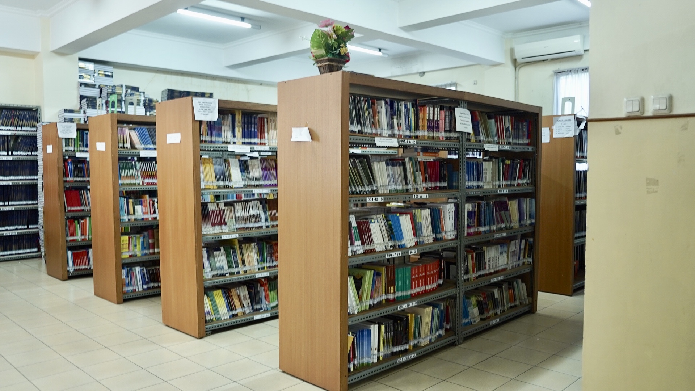
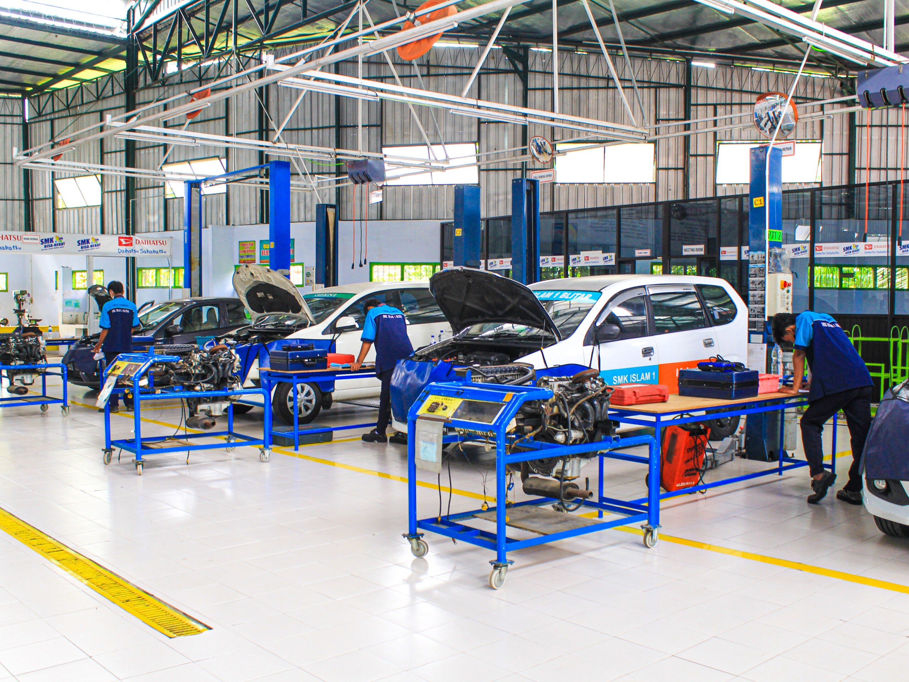

SMK Taruna Jaya Prawira |
|
| THE WINNER | |
SMK Taruna Jaya Prawira adalah salah satu sekolah unggulan yang telah menciptakan generasi bangsa yang hebat dan juga bermanfaat unruk memajukan bangsa generasi indonesia, dan juga di dalam sekolah, murid-murid yelah di didik sebaik dan sebagus mungkin oleh para guru-guru yang sabar menghadapi sifat-sifat dan perilaku berbagai murid.
tujuan kami para pendidik di SMK Taruna Jaya Prawira juga untuk memajukan bangsa dan tekhnologi lokal melaui murid-murid yang terus di didik agar generasi indonesia kedepannya menjadi Generasi Emas yang akan membuat indonesia menjadi top negara termaju dan ber IQ tinggi ti leadboard dunia.
Kembali Ke Atas| No | Program Keahlian | Lama Belajar |
|---|---|---|
| 1 | Rekayasa Perangkat Lunak | 3 Tahun |
| 2 | Teknik Komputer & Jaringan | 3 Tahun |
| 3 | Teknik Kendaraan Ringan | 3 Tahun |
| 4 | Teknik Intalasi | 3 Tahun |
| 5 | Teknik Pemesinan | 3 Tahun |
| 6 | Teknik Pengelasan | 3 Tahun |
| Laboratorium Komputer | Perpustakaan | Bengkel Praktik |
.webp) |
 |
 |